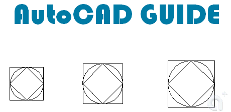

在一張圖形內有30個圓,尺寸均不相同,在不知情況下要如何去快速知道尺寸相同的各有多少,而不用一個個去標註,再來數數量,因為這樣很讓費時間
依你的需求有很多方法可達成，可運用AutoCAD本身提供的指令，不過需要一點技巧運用，而使用AutoLISP程式是最快的方法。
※※提供以下方法供你參考，適用於 AutoCAD 2000 以上版本，有問題請再提※※
方法一: LIST指令
利用 LIST指令 顯示選取物件的資料庫資訊，需要在加入下列語法。
(SSGET "X" '((0 . "CIRCLE")))
操作步驟如下:
代碼:
指令: LIST .....{Enter}
選取物件: (SSGET "X" '((0 . "CIRCLE"))) .....{Enter}
<Selection set: cd>
5 找到
選取物件: .....{Enter}
CIRCLE 圖層:「0」
空間: 模型空間
處理碼 = 7f5
中心點 , X= 297.8348 Y= 64.4391 Z= 0.0000
半徑 9.0000
圓周 56.5487
面積 254.4690
CIRCLE 圖層:「0」
空間: 模型空間
處理碼 = 7f4
中心點 , X= 280.2779 Y= 63.8542 Z= 0.0000
半徑 8.0000
圓周 50.2655
面積 201.0619
方法二: QSELECT 指令 QDIM 指令
QSELECT 指令 根據過濾準則來建立選集 → 過濾圓選集
QDIM 指令 快速建立標註 → 半徑(R)
動態操作步驟如下:
方法三: AutoLISP程式
自定程式指令 AutoQDIM 自動化圓半徑標註
動態操作步驟如下:

下載 自動化圓半徑標註程式：
;;;;;;;;;;;;;;;;;;;;;AutoCAD 指南;;;;;;;;;;;;;;;;;;;;;
;;;;;http://tw.club.yahoo.com/clubs/AutoCADGUIDE/;;;;;
;;;;;;;;;;;;2007/03/26/ ATSAI CAD 2007;;;;;;;;;;;;;;;;
;;;;;;;;;;;;;;;;;;版權所有 翻印必究;;;;;;;;;;;;;;;;;;;
(DEFUN C:AutoQDIM ()
(SETVAR "CMDECHO" 0)
(SETQ OLDLAYEAR (GETVAR "CLAYER"))
(SETQ S1 (SSGET "X" '((0 . "CIRCLE"))))
(COMMAND "LAYER" "M" "S-DIM" "" "Qdim" S1 "" "R" 0)
(SETVAR "CLAYER" OLDLAYEAR)
(PROMPT "\n***自動化圓標註完成***")
(princ)
)